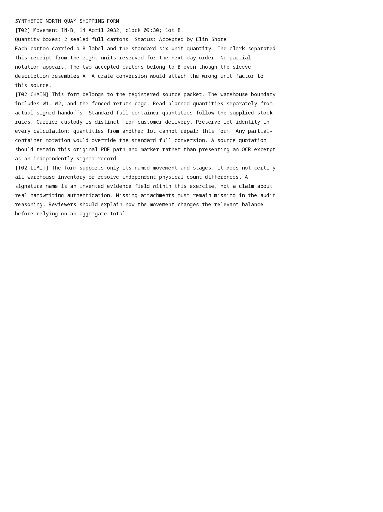

pdf-page-0002-raster.png
Published path: runs/08-scanned-inventory-mixed/extraction/D00008/attempt-5bvezmai/pdf-page-0002-raster.png
Open / download original bytes

validation/runs/08-scanned-inventory-mixed/extraction/D00008/attempt-5bvezmai/pdf-page-0002-raster.png · 431,629 bytes · SHA-256 37cc3438ff845d5cb9802df1372cdf244ed7347ad8a4ba11fc646be3e19a803a
